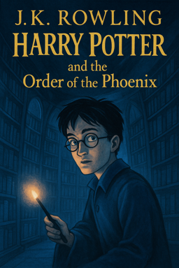

Harry Potter and the Oder of Phoenix
Back to Hogwarts  As soon as Harry and Cedric land in the eerie graveyard, confusion fills their faces. Before either can react, a voice hisses, and from the shadows steps Peter Pettigrew, cradling something strange and small in his arms. With no time to understand, Harry hears the chilling command: “Kill the spare.” A flash of green light erupts from Pettigrew’s wand. Cedric Diggory falls, lifeless, his eyes wide open, his body crumpled beside Harry. There’s no time for grief. Pettigrew binds Harry, forcing him to the base of a towering gravestone — the grave of Tom Riddle Sr. The ritual begins. Pettigrew slices Harry’s arm, taking his blood. He adds it to the boiling cauldron along with a bone from the grave and his own flesh. With a terrible finality, Voldemort rises, reborn, whole once more. Voldemort summons his Death Eaters and mocks Harry. Then, eager to prove his power, he releases Harry’s bonds and forces him to duel. Their spells collide — Voldemort’s green curse, Harry’s red disarming spell. A golden light connects their wands. The dome of light forms around them, shutting out the Death Eaters. From Voldemort’s wand emerge the shades of those he has killed: first Cedric, then Frank Bryce, Bertha Jorkins, and finally Harry’s parents. The ghostly figures speak words of comfort and courage. His mother urges him to run when the moment comes. When the shades distract Voldemort, Harry seizes his chance. He sprints to Cedric’s body, Summons the Triwizard Cup, and with a blinding pull, the Cup whisks him away — back to Hogwarts, back to safety, Cedric’s body in tow.Summary
Harry Potter and the Goblet of Fire begins with Harry having a strange dream about Lord Voldemort plotting with Wormtail (Peter Pettigrew) and a stranger named Barty Crouch Jr. Meanwhile, at the Weasleys’, Harry joins Ron and Hermione to attend the Quidditch World Cup. The celebration turns dark when Death Eaters attack the campgrounds, and someone casts Voldemort’s Dark Mark in the sky, causing panic. Back at Hogwarts, the school hosts the legendary Triwizard Tournament, a competition between Hogwarts, Beauxbatons, and Durmstrang. The Goblet of Fire chooses one champion from each school: Cedric Diggory (Hogwarts), Fleur Delacour (Beauxbatons), and Viktor Krum (Durmstrang). Shockingly, the Goblet produces a fourth name — Harry Potter’s — even though he never entered his name. Bound by the magic of the Goblet, Harry is forced to compete. The first task challenges the champions to retrieve a golden egg guarded by a dragon. Harry uses his broomstick to outfly a Hungarian Horntail, earning respect. The second task takes place underwater in the Hogwarts lake, where champions must rescue someone dear to them from the merpeople. Harry saves not only Ron but also Fleur’s sister, showing moral courage. Between tasks, Harry struggles with his growing fame and tension with Ron, who initially believes Harry cheated to enter the Tournament. Meanwhile, dark signs continue: Death Eater activity increases, and strange events hint at Voldemort’s return. A new Defense Against the Dark Arts teacher, the eccentric Alastor "Mad-Eye" Moody, keeps a protective eye on Harry, but not all is as it seems. The third task is a dangerous maze filled with magical obstacles. As Harry and Cedric near the Triwizard Cup at the center, they agree to take it together as a sign of unity. But the Cup is a Portkey, transporting them to a graveyard. There, Peter Pettigrew kills Cedric and traps Harry. In a horrific ritual, Pettigrew uses Harry’s blood, his own flesh, and a bone from Voldemort’s father’s grave to restore Voldemort to full power. Voldemort summons his Death Eaters and challenges Harry to a duel. When their wands connect, the rare magical effect of Priori Incantatem occurs, creating a link that forces Voldemort’s wand to regurgitate echoes of its last victims — including Harry’s parents. Their spirits encourage Harry to escape. Harry grabs Cedric’s body and the Cup, returning to Hogwarts. Back at school, Harry is celebrated, but the truth of Voldemort’s return brings fear. It is revealed that “Mad-Eye Moody” was actually Barty Crouch Jr. in disguise, working for Voldemort to ensure Harry reached the graveyard. The real Moody is rescued. The book ends with the wizarding world on the brink of war, as Harry mourns Cedric and prepares for the dark days ahead.
back to top